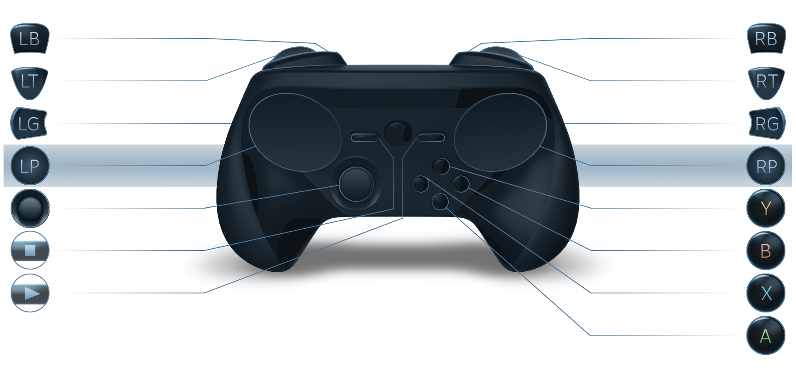

Visão geral
- Trackpads duplos
- Resposta tátil de alta definição
- Alavanca analógica
- Gatilhos bifásicos, com 10° de deslocamento cada, um sensor de fluxo magnético e um interruptor tátil
- Giroscópio e acelerômetro, permitindo que se use como um volante e outras formas de controle por movimento
- Esquemas configuráveis
- Multijogador local, caso disponível no jogo
- Com ou sem fio (modo duplo)
- USB 2.0 via porta Micro USB (cabo não incluso)
- Alcance aproximado de comunicação sem fio: 5 metros. Alcance real pode variar.
- Mais de 40 horas de jogo usando as pilhas alcalinas AA inclusas
Na caixa
- Controle Steam
- 2 pilhas AA
- Dispositivo USB para pareamento sem fio
Requisitos
- A Steam Machine ou outro computador capaz de rodar o modo Big Picture do Steam para ver, editar, salvar e compartilhar esquemas do Controle Steam.
